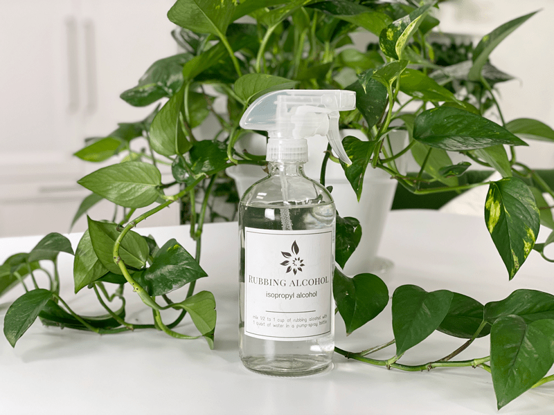

Rubbing Alcohol Pest Treatment
I always have a spray bottle ready and waiting for the next houseplant pest attack! Rubbing alcohol is the kind of alcohol most often recommended as an insecticide, and it usually is sold as a mixture of 70 percent isopropyl alcohol and 30 percent water. Luckily, I haven’t had to deal with plant pests all that often, and when I have, it’s been the good ol’ mealybug. I want to point out that you can’t use this solution on every house plant—for instance, African violets, or plants with fuzzy or waxy leaf surfaces.

You can use straight rubbing alcohol as a spot treatment, but other than that, you must dilute it, so you don’t burn or chill the sensitive plant leaves. I have made the mistake of using what I thought was a diluted solution and burnt the heck out of my plant. So please be sure to label the spray bottle if you plan to keep it around. It’s a sad, sad day when you lose a plant to your own ignorance. So, whatever I share on my site, whether it’s about food or plants, I share what I experience and learn through the journey.
Should you accidentally damage a plant using this solution (because you did test an area first) and you have a witness to it (like your spouse) just say, “Yeah, rough day with interior landscaping. My plant died of phytotoxicity.” Hang your head low, turn, and walk away slowly muttering words of sorrow. Phytotoxicity just means leaf burn, but sounds unexplainable to those who aren’t aware of its meaning.
Pests That It Works On (there may be more)
- Aphid damage is often most visible on tender new leaf tips, where you might find dense congregations of small insects busily sucking plant juices. Aphids have soft, sometimes translucent oval-shaped bodies and range in color. Afflicted plants may wither, with curled or deformed new growth. Read more (here).
- Mealybugs are tiny bugs that also cause yellowing of leaves. They may appear as a white, powdery substance under leaves and along stems. Read more (here).
- Spider mites look like moving dots on leaves. They are easier to spot from the webbing they leave in the foliage. They may cause stippling on leaves. Read more (here).
Rubbing Alcohol Solution – Treatment
- To make the spray, mix 1/2 to 1 cup of rubbing alcohol with 1 quart of water in a pump-spray bottle.
- Not all plants can handle rubbing alcohol, so test a leaf before proceeding.
- Spray a small part of the infected plant with the rubbing alcohol solution.
- Wait a few days and watch for signs of alcohol burn on the leaves, or any other adverse reaction to the rubbing alcohol on your plant.
- If you see any signs, do not use the spray on your plant.
- If the spray did not affect the plant, you can use it to treat the pests.
- Spray the affected parts of the plant, ensuring that the solution makes contact with the pest.
- If you can visibly see the pest, you can spot-treat by dipping the tip of a cotton swab into full-strength rubbing alcohol.
- Such selective treatment is less likely than a full-on spray to damage a plant’s leaves, if you take care to apply most of the alcohol to the mealybugs and their eggs rather than the leaves.
- The alcohol should dissolve the mealybugs’ and eggs’ protective coating and kill both the bugs and eggs on contact.
- Use a different swab for each treated plant, so you don’t spread from one plant to another.
- Allow the rubbing alcohol solution to dry on the pests for a few hours, then rinse the alcohol from the plant with clean water.
- Repeat the rubbing alcohol treatment weekly until the pests are gone.
© AmieSue.com